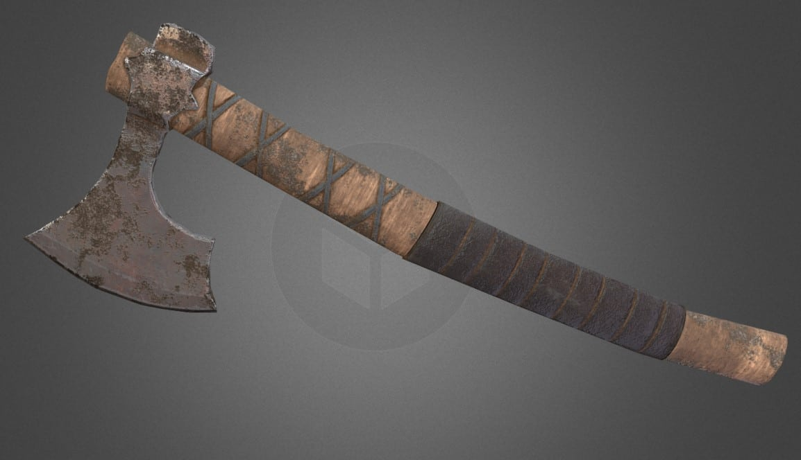
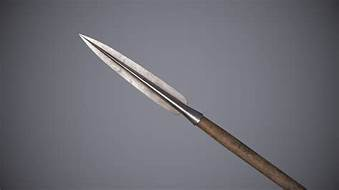
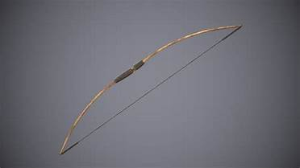

Axe
The axe was a brutally efficient and simple weapon, it required little skill to use, and little effort could be put into maing them. Unlike swords which to be effective required hard work to craft and maintain, as well as a level of practice and skill to use.
Spear
The spear is simply just better than an Axe or sword, no skill at all required, and to make it was just a sharp thing on a big stick. The use of spears in numbers would be used by the greeks to destroy armies much bigger and more trained than them. Not only does it require nothing to make or use, it has a reach advantage and maintains superiority through its use of countering cavalry
Bow
The bow required training, as well as a small bit of effort in crafting, the better the crafter the stronger the bow. However the range and advantage a bow gives makes it unbelievebly deady. To remove the bow from combat required the invention of firearms for the regular soldier. Evem in the presence of cannons the bow dominated use in ranged combat, some bows even capable of piercing the best armor